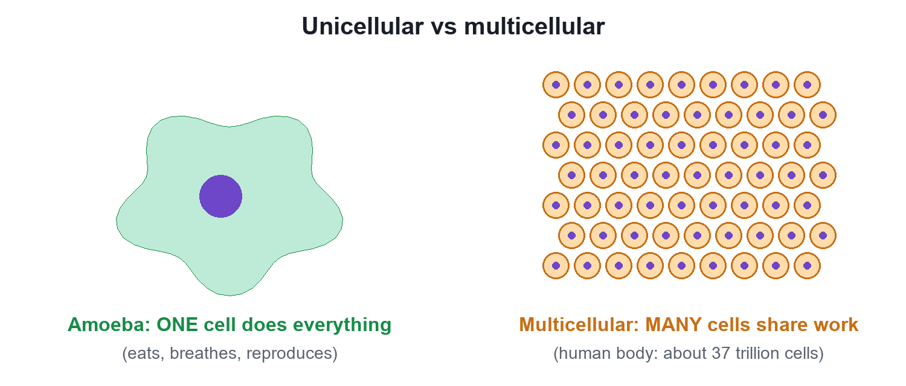
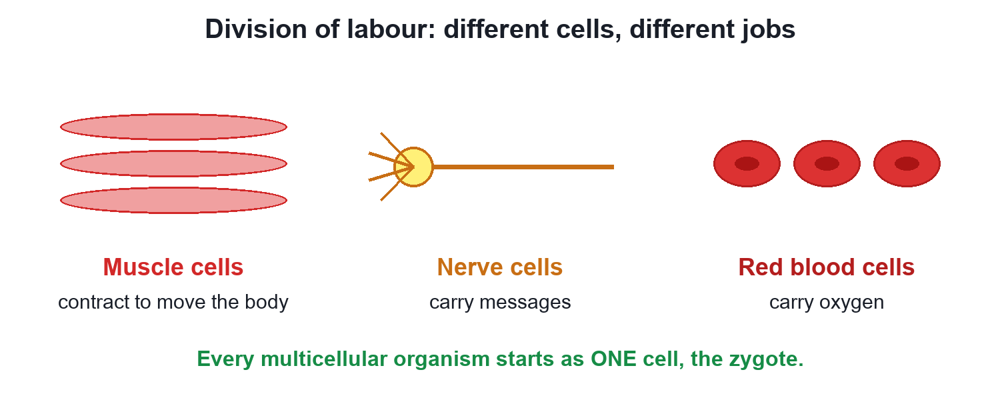

Chapter 5 · Biology
Unicellular and Multicellular Organisms
Video not playing? Watch on Instagram · YouTube
An amoeba is one cell; you are about 37 trillion. In one, a single cell does everything; in the other, cells share the work.
Download the short notesPDF, 165 KB · solved examples, practice set and answer key That's all the videos in this chapter so far Back to The Fundamental Unit of Life
Key points
- Unicellular: the whole body is one cell, which carries out every life process (Amoeba, Paramecium, bacteria).
- Multicellular: many cells (fungi, plants, animals, humans).
- Division of labour: specialised cells do different jobs (muscle, nerve, red blood cells).
- Every multicellular organism starts as one cell, the zygote.
One cell vs trillions

In an Amoeba the single cell takes in food, respires, removes waste and reproduces by dividing. Your body has about 37 trillion cells (an estimate).
Division of labour

| Cell | Job |
|---|---|
| Muscle cell | Contracts to move body parts |
| Nerve cell | Carries messages |
| Red blood cell | Carries oxygen |
From one cell
A multicellular organism develops from a single cell, the zygote, which divides again and again (1 → 2 → 4 → 8 …); the cells then specialise.
Quick quiz
5 questions. Choose an answer for each, then submit to see your score and the explanations.
More from The Fundamental Unit of Life
 Cell TheoryYour body has about 37 trillion cells. Three scientists showed that every living thing is built from cells, and every cell comes from another cell.Biology
Cell TheoryYour body has about 37 trillion cells. Three scientists showed that every living thing is built from cells, and every cell comes from another cell.Biology Discovery of the CellIn 1665 a thin slice of cork showed tiny boxes Robert Hooke called cells. Then came living cells (1674) and the nucleus (1831).Biology
Discovery of the CellIn 1665 a thin slice of cork showed tiny boxes Robert Hooke called cells. Then came living cells (1674) and the nucleus (1831).Biology Robert Hooke and the Discovery of CellsThe man who named the cell left no surviving portrait. Meet Robert Hooke, his book Micrographia, his lamp-lit microscope and his count of cork cells.Biology
Robert Hooke and the Discovery of CellsThe man who named the cell left no surviving portrait. Meet Robert Hooke, his book Micrographia, his lamp-lit microscope and his count of cork cells.Biology